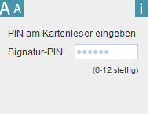

PIN am Kartenleser Eingabe
Zur Erstellung einer Signatur oder beim Ändern der PIN werden Sie aufgefordert die Signatur-PIN auf der Tastatur des Kartenlesegerätes einzugeben und mit der grünen Taste zu bestätigen.
Bei Kartenlesern mit sicherer PIN-Eingabe (Pinpad) wird die Anzahl der eingegebenen Stellen im Applet angezeigt.

- Geben Sie die Signatur-PIN direkt auf der Tastatur ihres Kartenlesers ein.
- Bestätigen Sie anschließend ihre Eingabe mit der grünen Bestätigungstaste auf der Tastatur ihres Kartenlesers.
Für Kartenleser mit Anzeige ist dies nicht der Fall, die Stellen werden auf der Anzeige des Lesegerätes angezeigt.

Bitte beachten Sie das unter Linux (PCSCLite) keine Anzeige im Applet möglich ist. Die Macintosh PCSC-Schnittstelle unterstütz keine Pinpad Kartenleser.